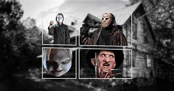
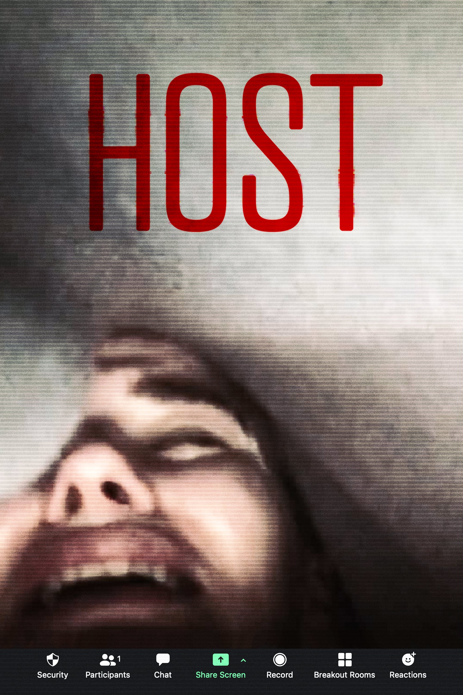
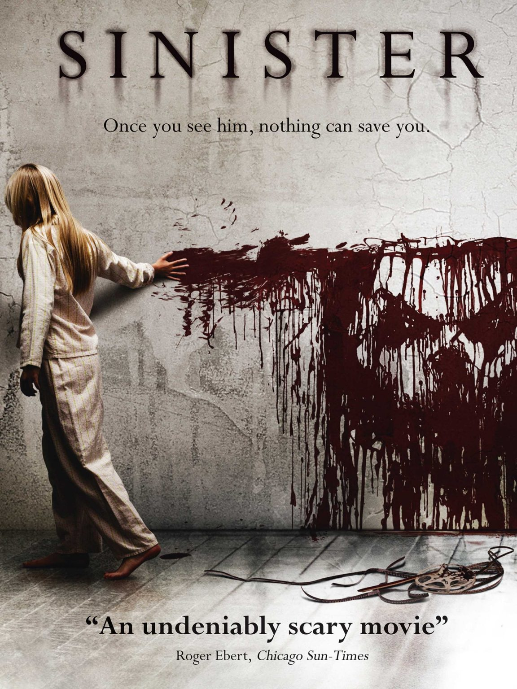
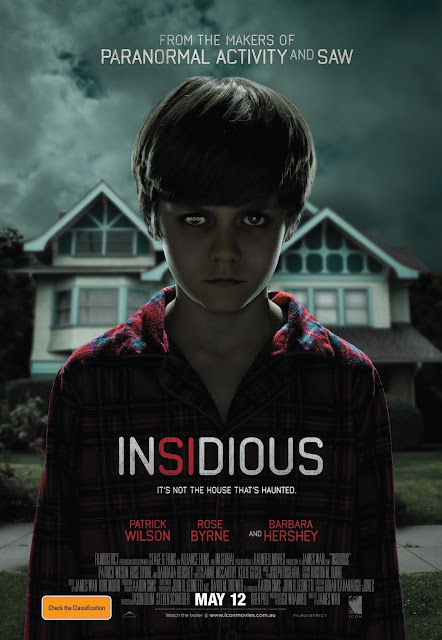
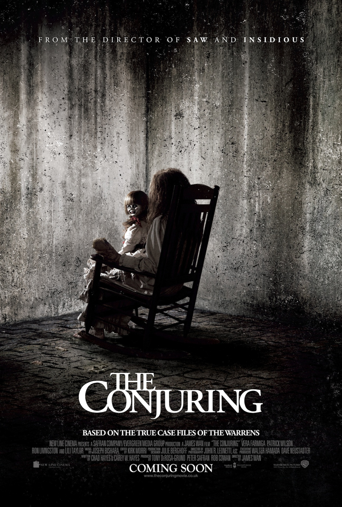
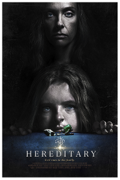
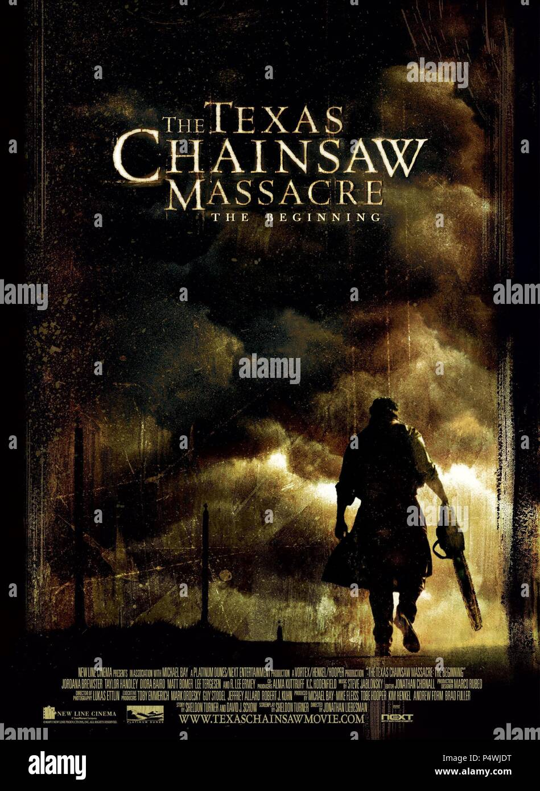
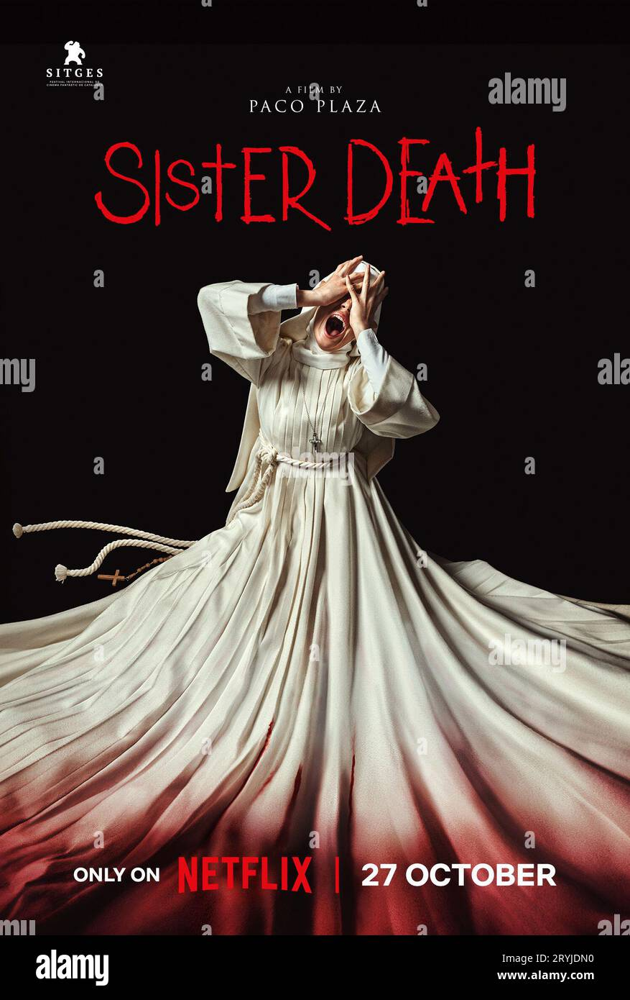
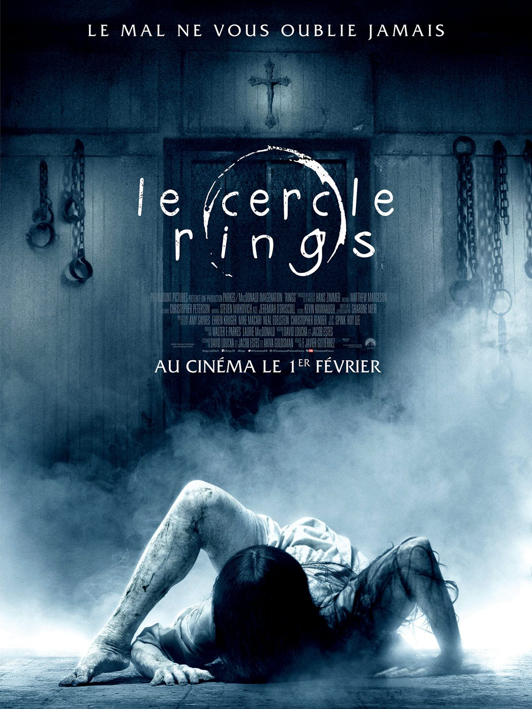

TERROR COM PIPOCA!
TOP DA MÍDIA
Cuidado Com Quem Chama(Host - 2020)
Uma jovem cuidadora aceita um emprego para cuidar de um homem misterioso numa mansão isolada. Mas o que parecia ser um trabalho comum logo se transforma em um pesadelo, onde nada é o que parece ser.
A Entidade(Sinister - 2012)
Quando uma família se muda para uma nova casa, acontecimentos estranhos começam a se intensificar. Um jornalista começa a investigar e descobre que há uma força invisível e mortal que ameaça destruir tudo ao redor.
Sobrenatural(Insidious - 2010)
Depois que seu filho cai em coma, uma família enfrenta terrores que vão além do mundo físico. Espíritos e entidades do além invadem sua casa, e o tempo para resgatar o garoto.
Invocação do Mal(The Conjuring - 2013) 
É o primeiro filme da sequência dos Warren, este filme mostra uma família aterrorizada por uma entidade maligna que habita sua casa e desafia todas as explicações racionais.
Hereditário(Hereditary - 2018)
Após a morte da matriarca da família, eventos perturbadores e segredos sombrios começam a emergir. Um terror psicológico que desmonta qualquer noção de normalidade e deixa você pensando muito depois dos créditos finais.
FILMES QUE ME TRAUMATIZARAM
Massacre da Serra Elétrica(The Texas Chainsaw Massacre - 2006)
Uma viajem inocente pelas estradas do Texas se transforma em um pesadelos sangrento quando um grupo de jovens cruza o caminho de uma família brutal e perturbadora. Um passado sombrio começa a ser revelado.
Invocação do Mal 2(The Conjuring 2 - 2016)

Baseado em eventos reais, esse caso leva os investigadores paranormais Ed e Lorraine Warren até uma casa na Inglaterra, onde uma mãe e seus filhos enfrentam uma presença sombria. Mas o mal que os persegue pode ser mais antigo.
Irmã Morte (Sister Death - 2023)
Em um convento isolado da Espanha pós-guerra, uma jovem noviça chega para ensinar meninas órfãs - mas descobre que a fé não protege contra o que espreita nas sombras. O passado do lugar guarda um secredo cruel... e alguém quer ser ouvido.
O chamado 3(Rings - 2017)
Uma lenda urbana ganha um novo fôlego quando uma estudante assiste um vídeo amaldiçoado que promete a morte em sete dias. Mas dessa vez, a maldição parece ter se espalhado... e estar mais forte do que nunca.
Sobre o Blog
Este é Blog feito para amantes de filme de terror e que adoram compartilhar sobre filmes marcantes, tanto possitivamente ou traúmaticamente com cenas que ainda me assombram até hoje. Se você também adora uma boa tensão, um susto bem colocado e aquele terror quer fica na cabeça por dias, seja bem-vindo ao clube dos que não dormem depois de um bom filme.